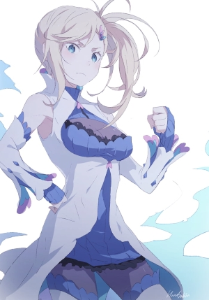

Minerva, a Bruxa da Ira, é uma das personagens mais únicas de Re:Zero. Apesar de ser a bruxa de um dos pecados mais destrutivos, ela não gosta de conflitos e seu objetivo é curar as pessoas. No entanto, sua personalidade é marcada por uma série de peculiaridades fascinantes:
Curandeira Hostil: Ela cura as pessoas atacando-as (socando-as), pois canaliza sua frustração com a violência do mundo na cura.
Confusão de Emoções: Ela frequentemente confunde tristeza com raiva, usando sua "ira" como justificativa para chorar pelas pessoas machucadas.
Focada no Presente: Preocupa-se apenas com o que está logo à sua frente, ignorando o "quadro geral" ou as consequências colaterais de seus atos até que se tornem um problema direto.
Fácil de Enganar: Apesar de ser uma bruxa poderosa, ela é incrivelmente ingênua e considerada a personagem mais fácil de ser enganada em toda a obra.
Orgulhosa e Adorável: Demonstra grande orgulho pelo seu trabalho curativo e, embora seja mandona e agressiva na forma de lidar com os feridos, suas intenções de ajudar são tão genuínas que ninguém consegue realmente se ofender com seu jeito.
A Minerva é uma das personagens mais marcantes de Re:Zero. Ela é a Bruxa da Ira (Wrath), mas sua personalidade é muito diferente do que o título faz parecer. Aqui estão algumas curiosidades:
1. Ela odeia ver qualquer pessoa machucada Mesmo pequenos ferimentos deixam Minerva extremamente irritada. Sua "ira" nasce da tristeza de ver alguém sofrendo, não do desejo de machucar os outros.
2. Seu poder principal é curar Ao dar um soco em alguém, Minerva pode curar instantaneamente todos os ferimentos dessa pessoa. É uma habilidade única entre as Bruxas do Pecado.
3. Curar tem consequências Seu poder não cria energia do nada. Para restaurar alguém, ele consome mana do mundo ao redor, o que pode causar desastres naturais em outros lugares, como terremotos ou tempestades. Assim, salvar uma pessoa pode colocar muitas outras em risco.
4. Ela se irrita muito fácil Minerva grita, reclama e discute por qualquer motivo, principalmente quando alguém se machuca de propósito ou aceita o próprio sofrimento.
5. Ela gosta do Subaru Apesar de brigar bastante com o Natsuki Subaru, Minerva demonstra preocupação genuína com ele e tenta ajudá-lo quando percebe o quanto ele sofre.
6. Ela é muito forte fisicamente Mesmo sem usar armas, Minerva possui força absurda. Seus socos podem destruir o chão e causar ondas de impacto enormes.
7. Ela tem um grande coração Embora pareça agressiva, Minerva é provavelmente uma das Bruxas mais bondosas. Ela não suporta injustiça e sempre tenta salvar quem está sofrendo, mesmo que isso tenha um preço.
8. Vive brigando com Echidna Ela frequentemente entra em discussões com a Echidna porque considera frias e cruéis muitas das decisões da Bruxa da Ganância.
Minerva viveu cerca de 400 anos antes da história principal, na mesma época das outras Bruxas do Pecado.
Antes de se tornar a Bruxa da Ira, ela era uma humana comum.Em algum momento, ela recebeu o Fator da Bruxa da Ira, tornando-se a representante desse pecado.
Sua personalidade já era extremamente compassiva: ela odiava ver pessoas sofrendo e fazia de tudo para ajudá-las.
Minerva acredita que ninguém deveria sofrer. Sempre que vê alguém ferido ou chorando, ela fica profundamente irritada e faz de tudo para ajudá-lo. Sua ira nasce da compaixão, não do ódio.